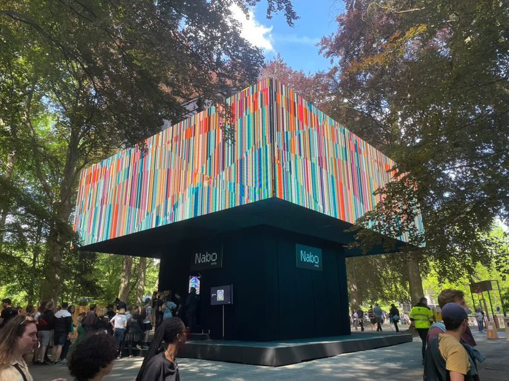
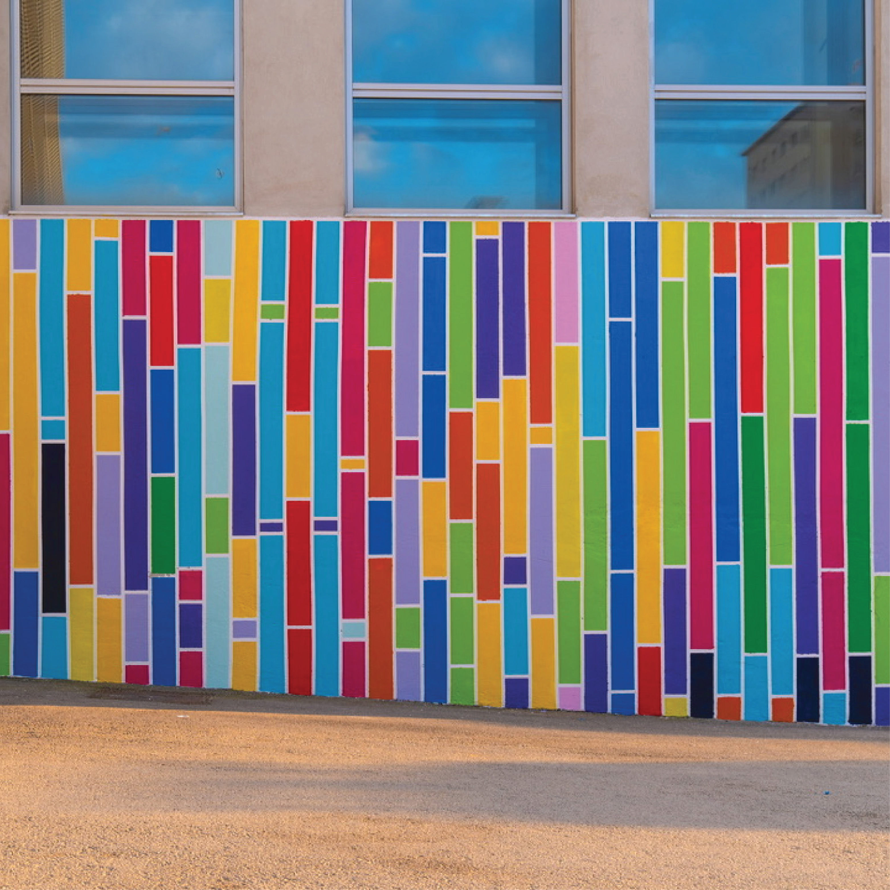
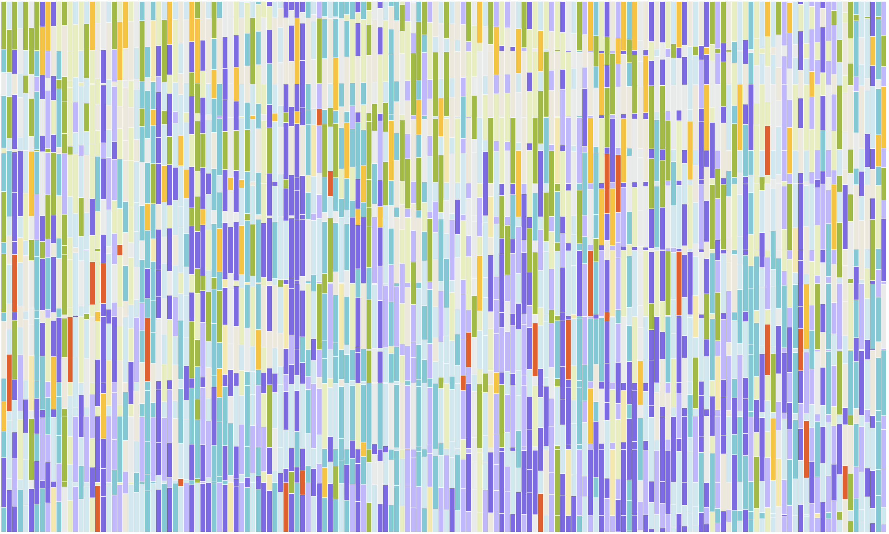
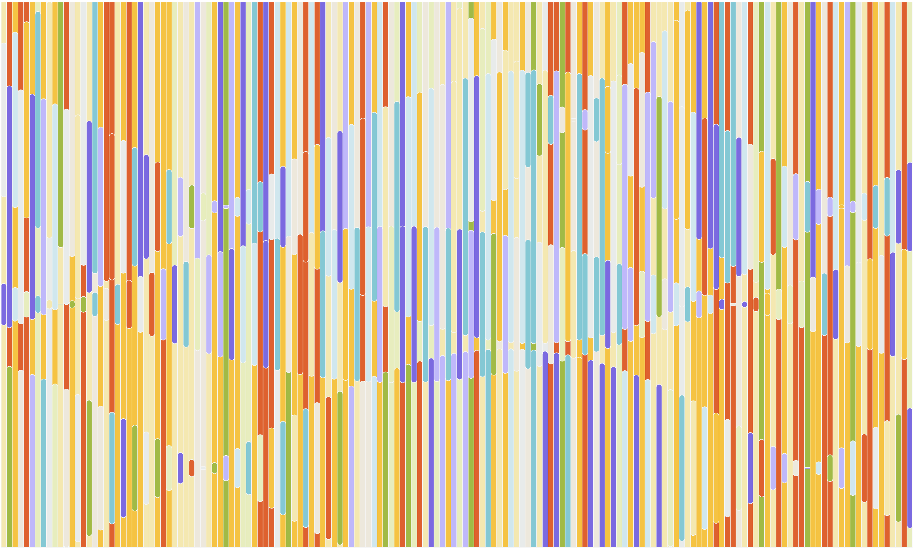
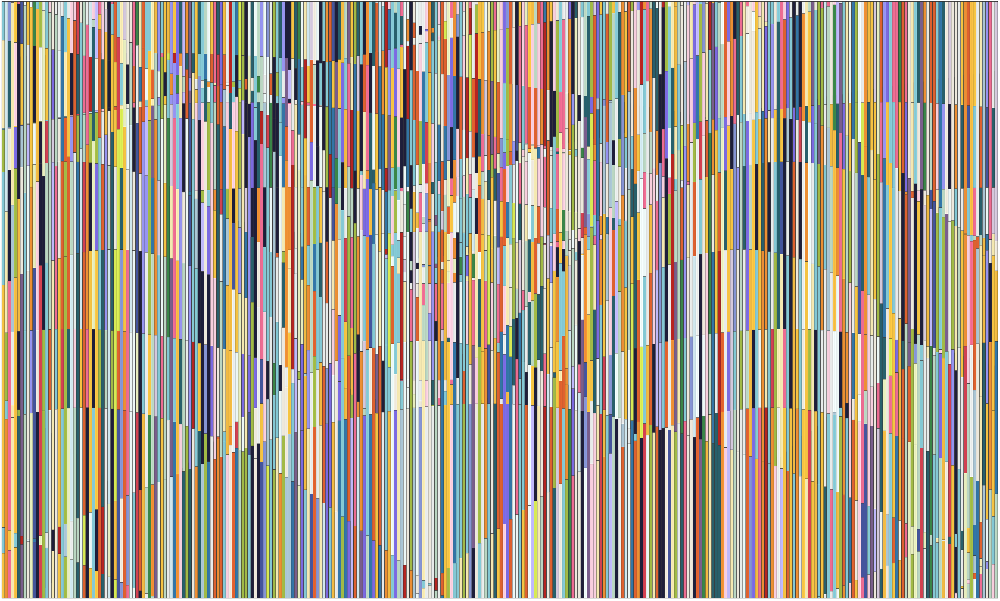

Art For Walls In Public Spaces
2022
144 NFTs
fx(hash) project page
Publication:
- Slowing down with... Anna Lucia, i illucid, March 2022
Exhibitions:
- 2022 Raumvisionen, Francisco Carolinum, Linz, Austria
- 2022 Chance Encounters in New Mediums, Tezos x Art Basel, Basel, Switzerland
- 2022 Core (electronic music festival), Brussels, Belgium
For Art For Walls In Public Space, I was thinking about Brian Eno's Music for Airports and his ideas about ambient music, of which he said "it must be as ignorable as it is interesting". I wanted to explore how this principle might translate visually, particularly within the context of public space.
Brian Eno composed Music for Airports, by layering tape loops of differing lengths, a similar method is applied in Art For Walls In Public Spaces. The work is built up of looping lines of varying phases and amplitudes, creating a composition continuously unfolding. The result is a visual environment that invites both passing glances and sustained attention.
The project was originally released in 2022 as a long-form generative NFT series on the platform fx(hash). Since then it has been displayed during a music festival in Brussels, and a modified still has been painted on a public wall in Granollers, Spain.

Screen recording Art For Walls in Public Spaces #8

Installation view Core festival, Brussels

Mural adapted from Art For Walls in Public Spaces algorithm in Granollers, Spain

Art For Walls in Public Spaces #103

Art For Walls in Public Spaces #99

Art For Walls in Public Spaces #14